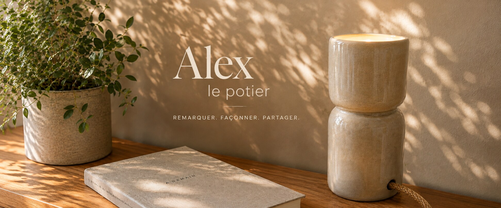

Ce qui est fait lentement reste.
Grès tourné à la main, petites séries


La semaine, je conçois des systèmes faits pour être reproduits à l'identique.
Le reste du temps, je fabrique des objets dont aucun ne peut l'être.

Grès tourné à la main, petites séries
La semaine, je conçois des systèmes faits pour être reproduits à l'identique.
Le reste du temps, je fabrique des objets dont aucun ne peut l'être.